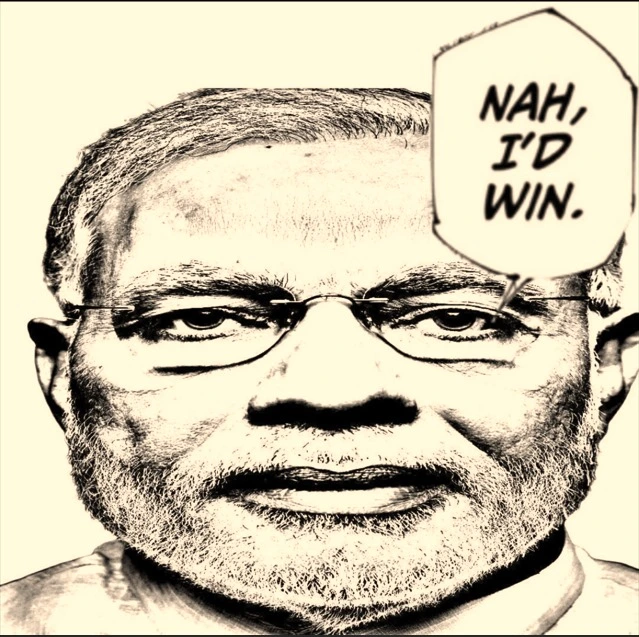

Our Faculty
Meet our esteemed faculty members who are abusive to their children and dedicated to your academic downfall.

Modi Satorou - Prime Minister and Supreme Leader of Gadhapradesh

Prof. Sahid Hossainberg - Dean and Principal (Drincipal)

Prof. Subho-Sama - HOD, Dept. of Meth
Notable Alumni
Our alumni have gone on to achieve absolutely nothing in their lives. Here are some of our disgusting graduates.

Iahita Peto - CEO of গয়ালের গোয়াল
Shantom Gayen - Baccha Chor

Rupak Halder - Renowned Gandu

Dr. Sayan Ghosh - Chairman and Director at Charsi Board of India (CBI)